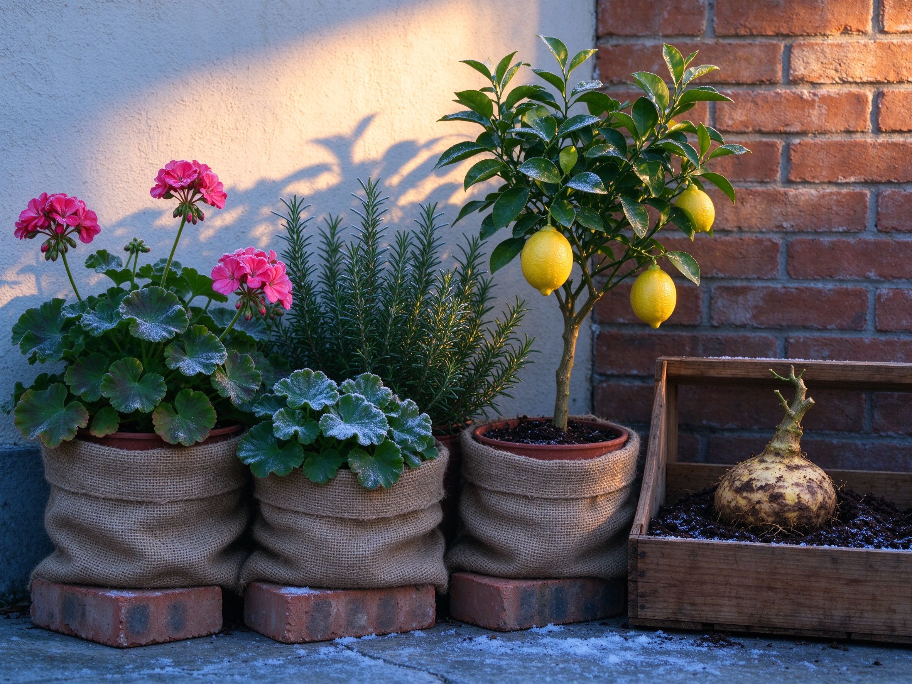

Overwintering Tender Plants and Container Gardens: A Practical Guide
Most of the plants people lose over winter aren't killed by cold — they're killed by wet roots, by pots that freeze and thaw, or by being brought indoors into a warm, dark room where they slowly rot. Getting tender plants through to spring is less about heroic protection and more about a few correct decisions made in the next couple of weeks.
First: Pots Are Colder Than the Garden
A plant in the ground has the whole earth as insulation. A plant in a pot has a small volume of soil exposed on all sides, so roots sit several zones colder than the label suggests. That's why a rosemary hardy in zone 7 can die in a zone 7 winter once it's in a pot.
Before anything else, deal with the pots:
- Empty the saucers and stop watering. Wet soil freezing and thawing repeatedly is what kills roots. From now until spring, pots should be damp, not wet.
- Move pots off the ground. Standing them on bricks or pallets keeps drainage holes clear and stops water pooling underneath.
- Group them. Cluster pots tightly against a south or west wall, ideally on gravel, so they shelter each other and benefit from reflected warmth.
- Insulate, don't seal. Wrap the pot — not the foliage — in burlap, bubble wrap, or a ring of straw. Roots need protection; leaves above the wrap still need light and air.
- Terracotta is the weak point. If water freezes inside unglazed clay, it cracks. Move precious terracotta pots under cover, or empty and store them dry.
Bringing Plants Indoors Without Killing Them
Indoor overwintering fails for three predictable reasons: too warm, too dark, and too wet. Tender perennials from temperate climates — geraniums, fuchsias, rosemary — want to slow down, not to grow in a heated living room.
- Check for pests before you move them. Look under leaves and along stems for whitefly, aphids, and spider mite webbing. A week of quarantine in a cool, bright spot beats infesting every houseplant you own.
- Choose a cool, bright place. An unheated sunroom, a bright porch, or a cool room near a window is better than a warm living room. Aim for cool but frost-free, and as much light as you can give.
- Expect leaf drop. When light drops, plants shed leaves. That's normal. Don't panic-fertilize to compensate.
- Water sparingly. Winter watering is the number one killer. Water only when the top few centimeters are dry, and never leave a plant sitting in a saucer of water.
- Stop feeding. No fertilizer from late autumn until you see new growth in spring.
The Cool-Storage Method (Garage, Basement, Shed)
Some plants overwinter best with no light at all. Dahlias, cannas, and bare-root geraniums are stored dormant in a cool, dark, frost-free space — a garage, a crawl space, or an unheated basement that stays above freezing but below about 10 °C / 50 °F.
Dahlias
Wait until frost blackens the foliage, then cut stems back to about 15 cm, lift the clump with a fork, and shake off most of the soil — don't wash it. Let the clumps dry a day or two out of the weather, then store them in a crate of barely damp potting mix, sand, or shredded paper. Check monthly; if they shrivel, mist lightly; if they mold, they're too wet or too warm.
Cannas and banana-like tropicals
Dig rhizomes or lift the whole pot after frost, trim the stems, and store the same way as dahlias — barely damp, cool, dark. In mild climates (zone 8 and warmer), cannas often overwinter in the ground under a thick mulch.
Geraniums, the old-fashioned way
Pelargoniums can survive winter as bare-root plants: lift them before hard frost, shake off soil, strip the leaves, and hang them or lay them in paper bags in a cool, dark, frost-free place. Check every few weeks and rehydrate the roots briefly if they look too shriveled. Cuttings taken in late summer are a more reliable route, giving you small rooted plants to overwinter on a windowsill.
Plant-by-Plant by Zone
- Rosemary: hardy in the ground roughly from zone 7–8 depending on variety; in a pot, treat as tender. Best options: shelter it outdoors against a warm wall, or overwinter it indoors in cool, bright conditions with very little water.
- Citrus (lemons, calamondin, kumquat): cool, bright, frost-free conditions around 10–15 °C are ideal. Warm, dark rooms cause leggy growth and scale insect. Water modestly, let the top of the soil dry between waterings.
- Fuchsias: cut back hard in autumn, keep cool and barely watered; many will regrow from the base in spring.
- Coleus and tender foliage plants: take cuttings in early autumn rather than trying to carry big plants through low light — cuttings root quickly in water or damp mix and make compact winter plants.
- Basil: treat as annual; it sulks and dies in winter light. Sow fresh in spring.
- Thyme, sage, oregano: usually hardy in the ground, but pots need the sheltered-group treatment above. Keep them on the dry side; winter wet is more dangerous than cold.
- Bay laurel: reliably hardy in mild zones; elsewhere bring it in, cool and bright.
If You'd Rather Not Bother
There's no shame in treating tender annuals as annuals. In cold climates, some gardeners simply buy fresh geraniums and fuchsias each spring, and take cuttings of the ones they love. Decide by value: a plant you'd hate to lose is worth the garage space; a cheap annual is not. If you're overwintering for the challenge, start with cuttings — small plants take up far less room and survive low light better than the parent plant does.
Spring Wake-Up
- Don't rush plants outdoors. Harden them off over a week or two, starting with a few hours of sheltered daylight.
- Wait until the risk of hard frost has passed before potting up stored tubers and rhizomes.
- Prune out dead growth, then resume watering and feeding as new shoots appear.
- Repot plants that spent winter in the same tired soil, and top-dress pots with fresh compost.
Most of this is decided in a single weekend: pots grouped and wrapped, tender plants moved, tubers lifted and stored. Do it before the first hard freeze and you'll spend spring gardening instead of shopping.